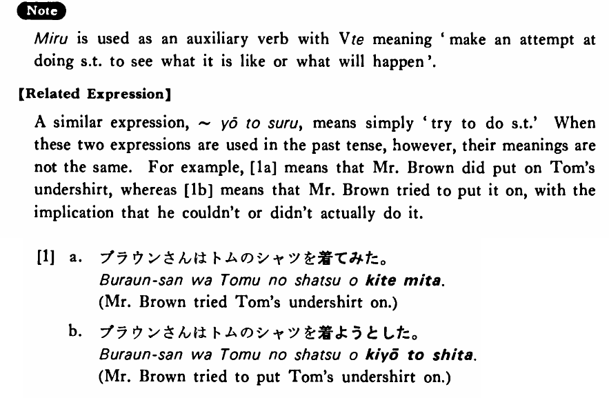

みる (B. 246)
- (ks).
- 私は日本の小説を読んでみる・みます。
- I will read Japanese novels (to see what they are like).
- (a).
- 面白そうなコンサートだったので行ってみました。
- Since it seemed interesting, I went to the concert (to see what it was like).
- (b).
- ここの刺身は美味しいですよ。食べてみますか。
- Sashimi here is good. Will you try it?
